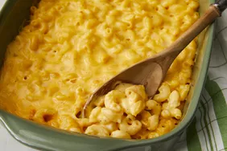

Mac And Cheese

Description
The following will be the recipe for Mac and cheese and a list of ingredients.
you will be able to make your very own delicious mac and cheese at home with the following ingredients and steps.
Ingredients
- butter
- fine chopped onion
- all purpose flour
- milk
- salt
- dry mustard
- ground black pepper
- elbow macaroni
- shredded cheddar cheese
- proccessed cheese (more commonly known as melting cheese)
Steps
- preheat oven (350farenheit or 175 celcius)
- Melt butter in a medium saucepan over medium heat. Sauté onion for 2 minutes. Stir in flour and cook for 1 minute, stirring constantly.
- Then stir in milk, salt, mustard, and pepper. Cook, stirring frequently, until mixture boils and thickens.
- Meanwhile, bring a pot of lightly salted water to a boil. Add macaroni and cook until al dente, 8 to 10 minutes; drain.
- Add Cheddar and American cheeses to milk mixture; stir until cheese melts.
- Combine cheese sauce and macaroni in a 2-quart baking dish; mix well.
- Bake in preheated oven until hot and bubbly, about 30 minutes. Let cool 10 minutes before serving.